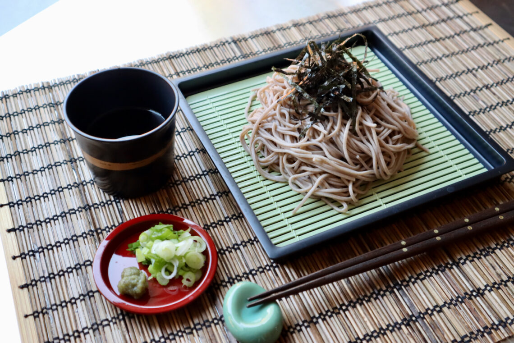

Cold Soba

Cold Soba, commonly served with a dipping sauce, is a great snack or light
meal that can be served on a warm day and enjoyed by all!
Ingredients
- Salt
- 1cup dashi or chicken stock
- ¼cup soy sauce
- 2tablespoons mirin or 1 tablespoon honey mixed with 1 tablespoon water
- 8ounces soba noodles
- Finely grated or minced ginger
- Minced scallions or toasted sesame seeds for garnish
Preparation Steps
- Bring a large pot of water to a boil, and salt it. Cook noodles until tender
but not mushy. Drain, and quickly rinse under cold running water until cold.
Drain well.
- Combine dashi or stock, soy sauce and mirin. Taste, and add a little more soy
if the flavor is not strong enough. Serve noodles with garnishes, with sauce on
side for dipping (or spooning over).